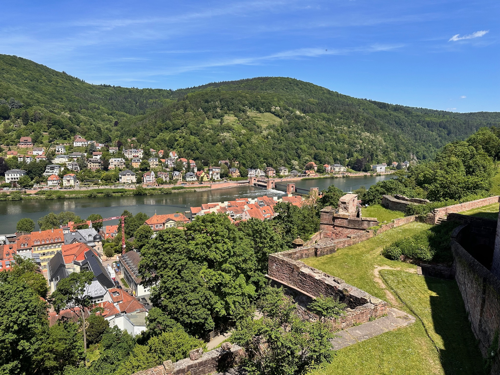
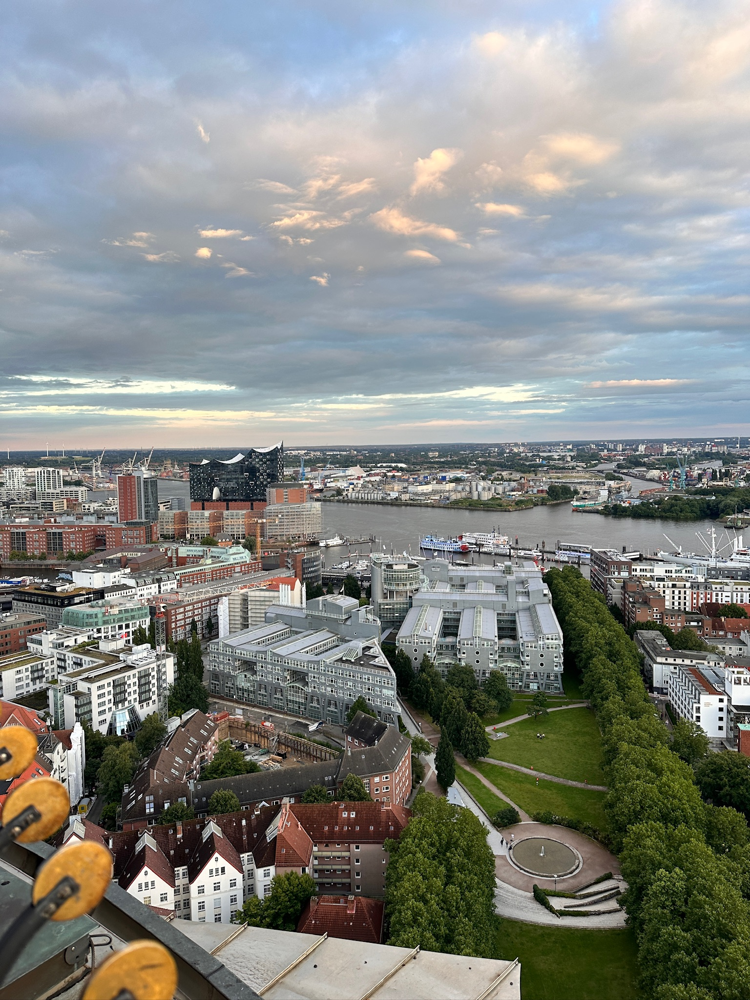
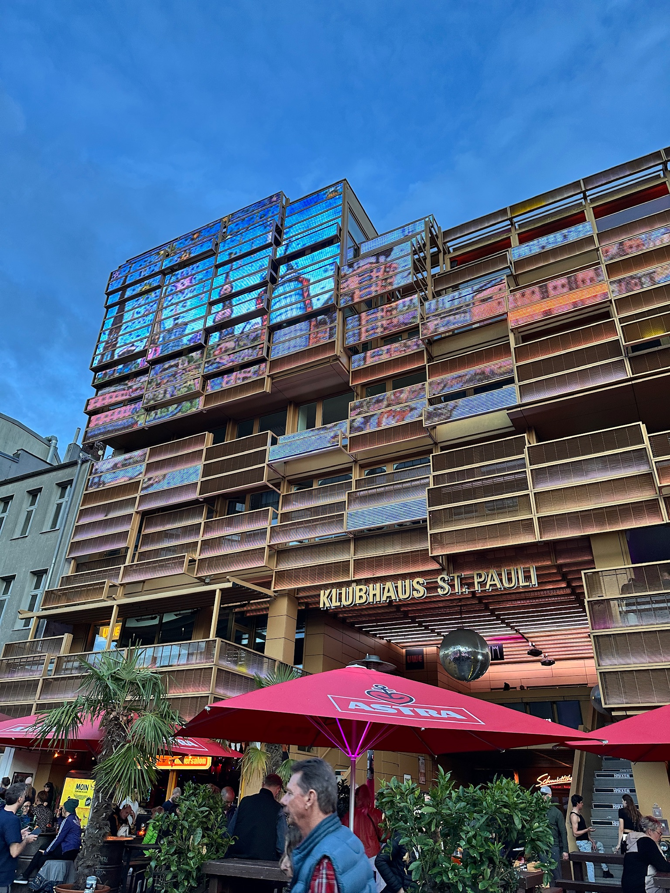
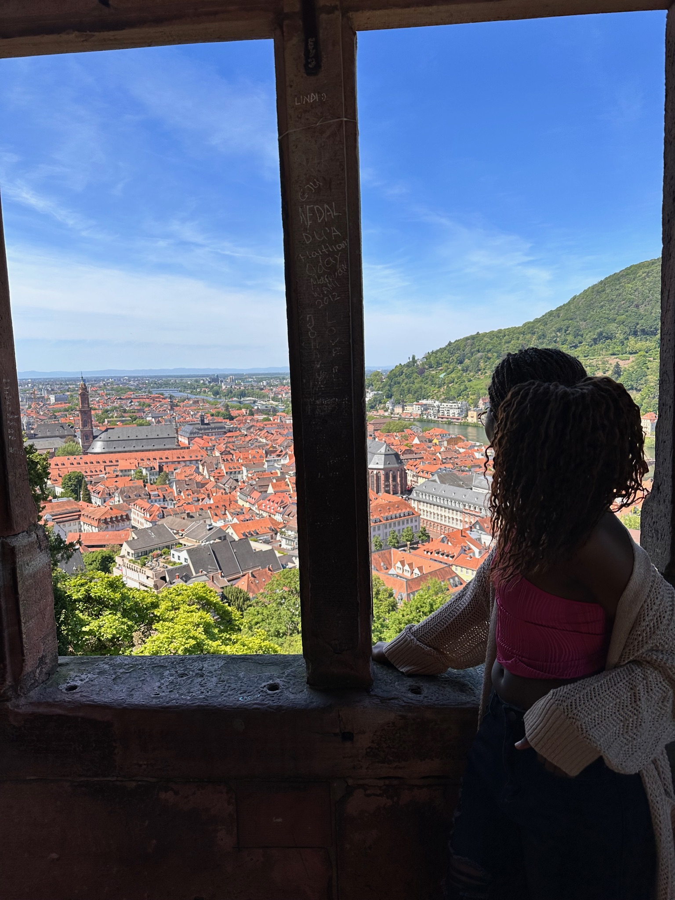
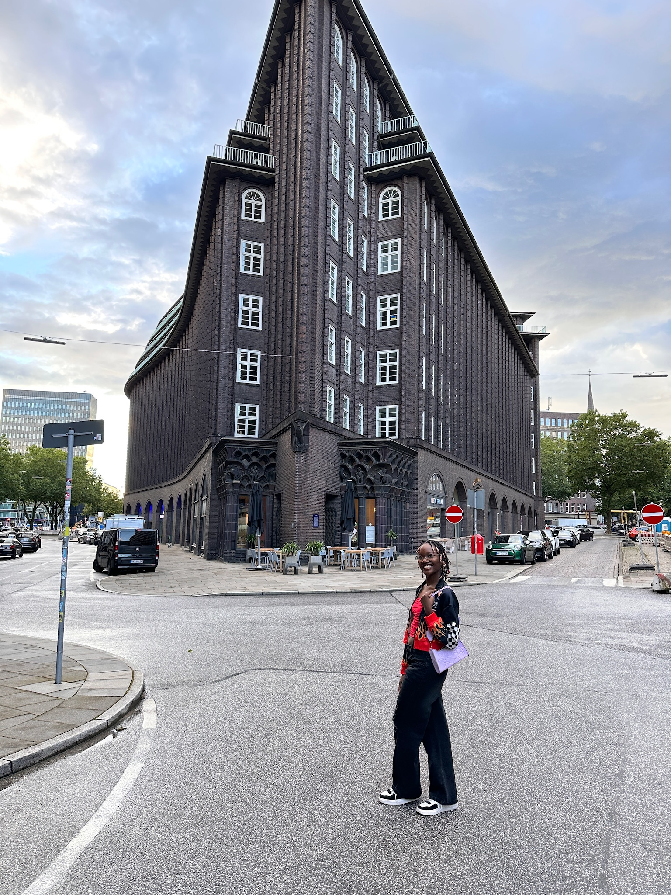
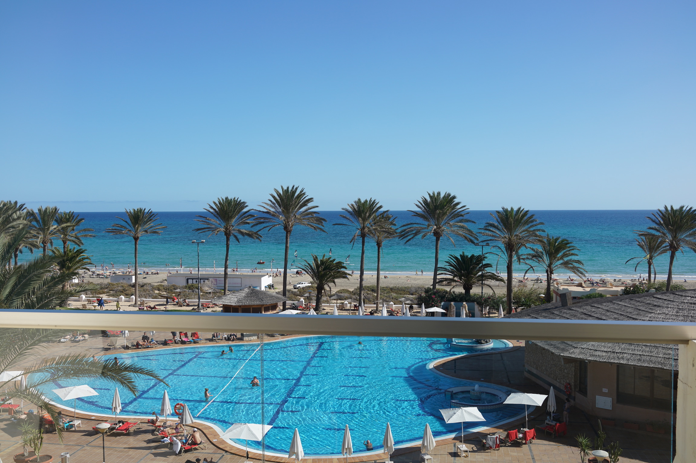
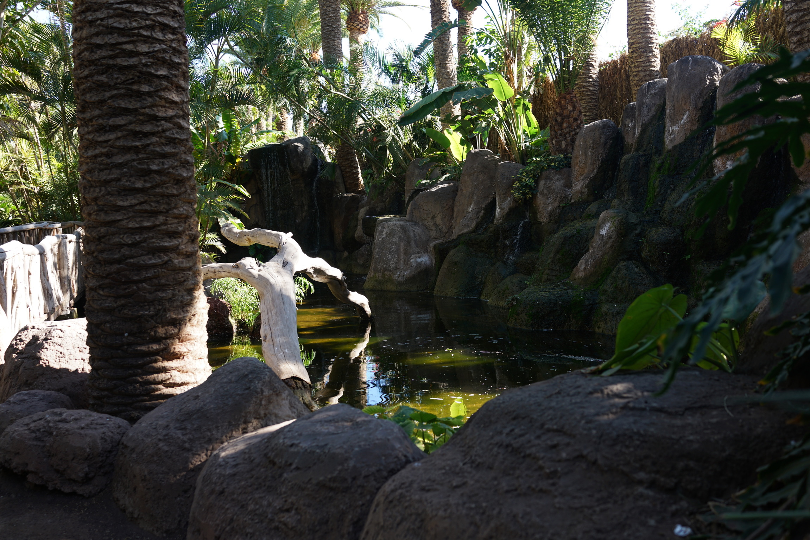
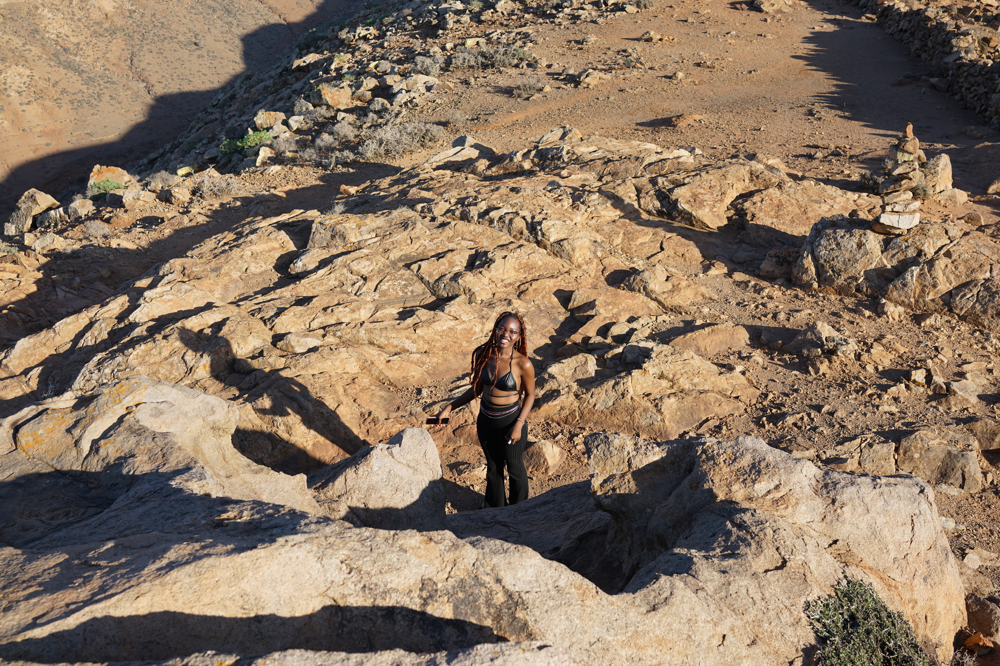
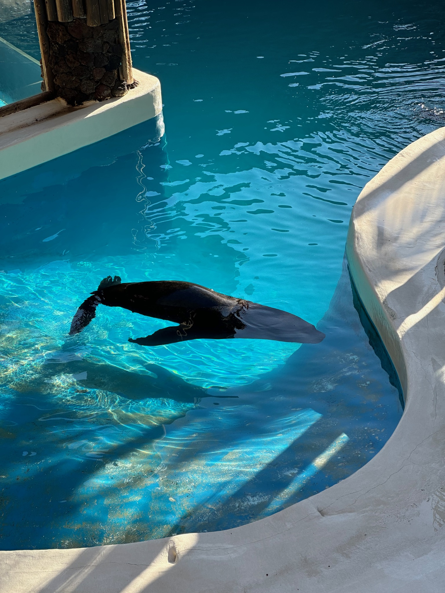

Hit the Road Jack!
Welcome
Book that trip! What are you waiting for? Join me on an exhilarating journey and let's explore the world together"Discover hidden gems, experience vibrant cultures and share the excitement of new Destinations.This is not just my travel story but an invitation for you to be part of the adventure. Share your own stories and lets create a community of explorers. Together,lets bring your travel vision board to life. Hit the Road Jack!
Destinations
Come on board and join me in a world of crazy adventure. I will take you across Europe, as i currently just moved there. Join me across Europe's most beautiful adventures. From the rich romantic streets of Zurich to the vibrant evergreen mountains and kansscapes of Germany.Whether you are a history lover, foodie or adventure seeker, Ive got the perfect tips, itineraries and budget friendly hacks for you! Discover Europe with Me!

Heidelberg, Germany
cost: €600
Heidelberg enchants you with its princesslike look and feeel, the narrow streets and the beautiful flowers in spring. The view from the castle above is as enchanting and magical as it looks. Be sure to grab your tickets early!

Hamburg,Germany
Cost:€450
Filled with architectural marvel and stunning views over the Elbe River,enjoy a paronamic view in the Hafencity. Go on a boat ride, and jump on the adventure wagon. Hamburg must certainly be on your list!

Reeperbahn,Germany
Cost: €700
Hamburg's Reeperbahn street is the city's most famous red light district and nightlife hub. Known as the sinful Mile, its a lively area filled with bars, clubs and theaters. Be ready for a once in a lifetime Experience!

Heidelberg, Germany
The paranomic view offered at heidelberg castle is one to wrestle for. The castle is a fascinating mix of gothic and Renaissance Architecture, with its ruins evoking a sense of romanticism and mystery

Hamburg, Germany
This striking office beauty is known for its unique, shiplike shape that resembles the bow of a vessel, whcih is fitting given Hamburg is a Port city. It stamds as a symbol of of the city's bustling commercial history and its modern architecture.

Fuerte Ventura, Spain
When the temperatures get low in Europe, make sure to try and have a trip to this amazing island in Spain. Small enough to go around in a few days, with amazing view points such as the popcorn beach! Also, amazing hotels that give a fantastic view of the beach and twmperatures of about 17 degrees in January!

Fuerte Ventura, Spain
Hidden in the middle of the desert like island, lies the most magical and beautiful pasis, thats set to have you relaxed and in awe, geta chance to see how the plants grow amd how theyre manipulated by the island to flourish in the dry harsh conditions. Tickets are cheap
Fuerte Ventura, Spain
When the temperatures get low in Europe, make sure to try and have a trip to this amazing island in Spain. Small enough to go around in a few days, with amazing view points such as the popcorn beach! Also, amazing hotels that give a fantastic view of the beach and twmperatures of about 17 degrees in January!

Fuerte Ventura, Spain
Lover of Animals? The little island caters for this too! i got a chance to actively indulge with the animals, and feed them and pet them. Such an amazing and thrilling experince to feel the tongue of the giraffe as it scoops the grass from your hands. So many different species and so much infomartion abailable about them! truly a magical experience.

Fuerte Ventura, Spain
I had obviously not expected the island to be dry and rocky! This majorly sums up the entire environ of the island,given aside the existence of an oasis.Please be asare to brimg the right shoes, as i clearly bad not done enough research on it!

Fuerte Ventura, Spain
Among the many animals found in the island, are the Sea lions. completely friendly , super sweet and with a sea lion show, what a perfect place to go with your family, kids or even friends!

Fuerte Ventura, Spain
When the temperatures get low in Europe, make sure to try and have a trip to this amazing island in Spain. Small enough to go around in a few days, with amazing view points such as the popcorn beach! Also, amazing hotels that give a fantastic view of the beach and twmperatures of about 17 degrees in January!
Fuerte Ventura, Spain
When the temperatures get low in Europe, make sure to try and have a trip to this amazing island in Spain. Small enough to go around in a few days, with amazing view points such as the popcorn beach! Also, amazing hotels that give a fantastic view of the beach and twmperatures of about 17 degrees in January!
Fuerte Ventura, Spain
When the temperatures get low in Europe, make sure to try and have a trip to this amazing island in Spain. Small enough to go around in a few days, with amazing view points such as the popcorn beach! Also, amazing hotels that give a fantastic view of the beach and twmperatures of about 17 degrees in January!
Fuerte Ventura, Spain
When the temperatures get low in Europe, make sure to try and have a trip to this amazing island in Spain. Small enough to go around in a few days, with amazing view points such as the popcorn beach! Also, amazing hotels that give a fantastic view of the beach and twmperatures of about 17 degrees in January!